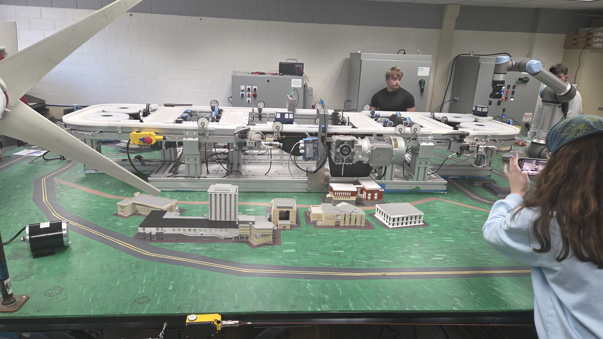

PRT Emulator
The PRT emulator is a modified conveyor system meant to closely model WVU's PRT system. it utilizes simulated stops and kick flaps to route cars and model real-life movement. The system uses Programable logic controllers (PLC's) to control how these cars are routed arcross the simulation. This gives students a chance to implement new control programs for testing before line implementation.
